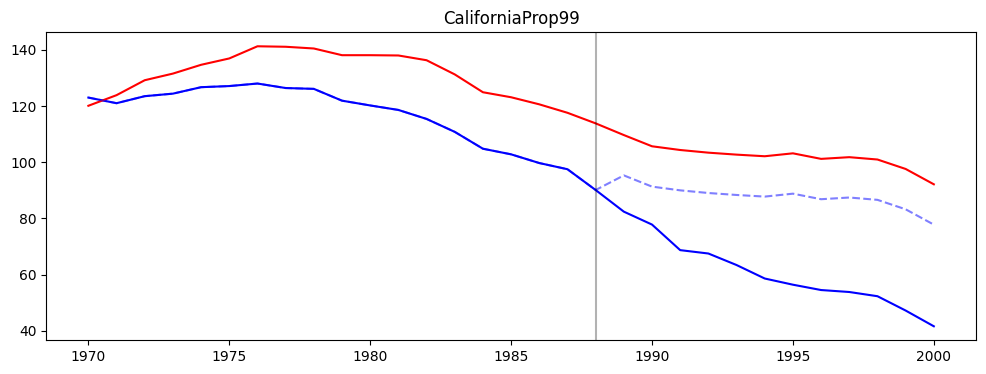
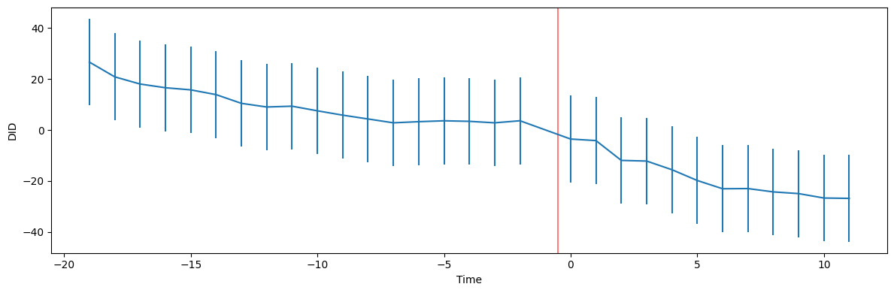
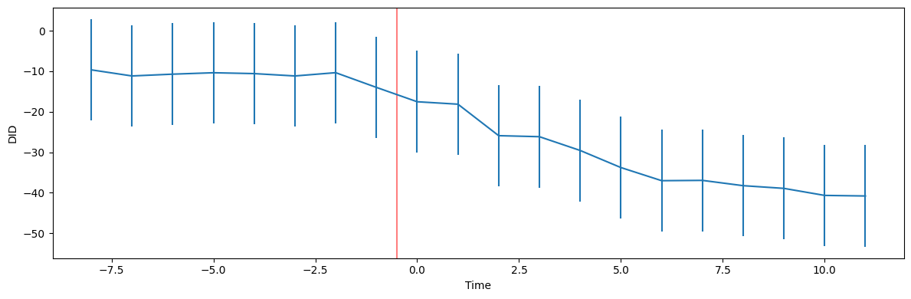

Difference-in-Difference (DID)
One of the most well-known estimators is probably Difference-in-Difference (DID). It compares the differences pre- and post-experiment of treatment and control. We have multiple versions of DID implemented in this framework. Where on requires a panel to be passed the other one needs a data frame (or a causal data frame to be more precise).
Causal Panel
[1]:
from azcausal.data import CaliforniaProp99
from azcausal.core.error import Bootstrap
from azcausal.core.parallelize import Pool, Joblib
from azcausal.estimators.panel.did import DID
# load an example data set with the columns Year, State, PacksPerCapita, treated.
panel = CaliforniaProp99().panel()
# initialize an estimator object, here difference in difference (did)
estimator = DID()
# run the estimator
result = estimator.fit(panel)
# plot the results
estimator.plot(result, title="CaliforniaProp99", show=False)
# create a process pool for parallelization
pool = Joblib(n_jobs=5, progress=False)
# run the error validation method
estimator.error(result, Bootstrap(n_samples=101), parallelize=pool)
# print out information about the estimate
print(result.summary(title="CaliforniaProp99"))
╭──────────────────────────────────────────────────────────────────────────────╮
| CaliforniaProp99 |
├──────────────────────────────────────────────────────────────────────────────┤
| Panel |
| Time Periods: 31 (19/12) total (pre/post) |
| Units: 39 (38/1) total (contr/treat) |
├──────────────────────────────────────────────────────────────────────────────┤
| ATT |
| Effect (±SE): -27.35 (±3.1080) |
| Confidence Interval (95%): [-33.44 , -21.26] (-) |
| Observed: 60.35 |
| Counter Factual: 87.70 |
├──────────────────────────────────────────────────────────────────────────────┤
| Percentage |
| Effect (±SE): -31.19 (±3.5439) |
| Confidence Interval (95%): [-38.13 , -24.24] (-) |
| Observed: 68.81 |
| Counter Factual: 100.00 |
├──────────────────────────────────────────────────────────────────────────────┤
| Cumulative |
| Effect (±SE): -328.19 (±37.30) |
| Confidence Interval (95%): [-401.29 , -255.09] (-) |
| Observed: 724.20 |
| Counter Factual: 1,052.39 |
╰──────────────────────────────────────────────────────────────────────────────╯

Causal Data Frame
[2]:
from azcausal.estimators.did import DID
# load the causal data frame
cdf = CaliforniaProp99().cdf()
# initialize an estimator object, here difference in difference (did)
estimator = DID()
# fit the estimator
result = estimator.fit(cdf)
# print out information about the estimate
print(result.summary(title="CaliforniaProp99", conf=95))
╭──────────────────────────────────────────────────────────────────────────────╮
| CaliforniaProp99 |
├──────────────────────────────────────────────────────────────────────────────┤
| Panel |
| Time Periods: 31 (19/12) total (pre/post) |
| Units: 39 (38/1) total (contr/treat) |
├──────────────────────────────────────────────────────────────────────────────┤
| ATT |
| Effect: -27.35 |
| Observed: 60.35 |
| Counter Factual: 87.70 |
├──────────────────────────────────────────────────────────────────────────────┤
| Percentage |
| Effect: -31.19 |
| Observed: 68.81 |
| Counter Factual: 100.00 |
├──────────────────────────────────────────────────────────────────────────────┤
| Cumulative |
| Effect: -328.19 |
| Observed: 724.20 |
| Counter Factual: 1,052.39 |
╰──────────────────────────────────────────────────────────────────────────────╯
Event Study
Exclude the time period -1 and set all DiD in relation to it
[3]:
from azcausal.estimators.event_study import EventStudy
# now perform the event study
estimator = EventStudy(n_pre=None, exclude=-1)
# you can fit this with a data frame or panel
result = estimator.fit(cdf)
# show the results in a plot
estimator.plot(result)

Assume that we run DID also before the experiment.
[4]:
from azcausal.estimators.event_study import EventStudy
# now perform the event study
estimator = EventStudy(n_pre=8, exclude=None)
# you can fit this with a data frame or panel
result = estimator.fit(cdf)
# show the results in a plot
estimator.plot(result)
